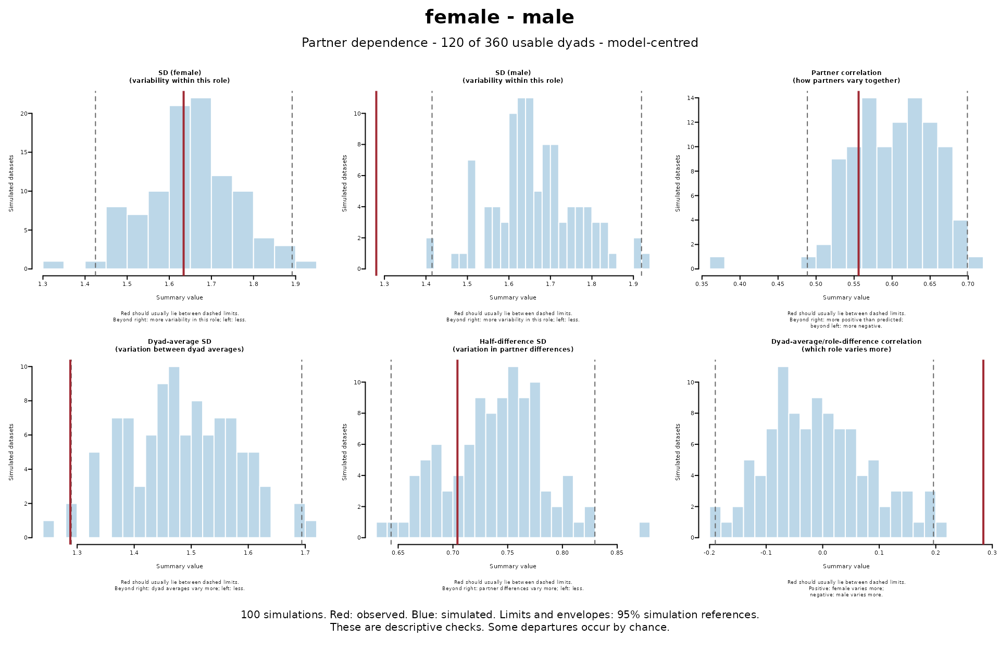
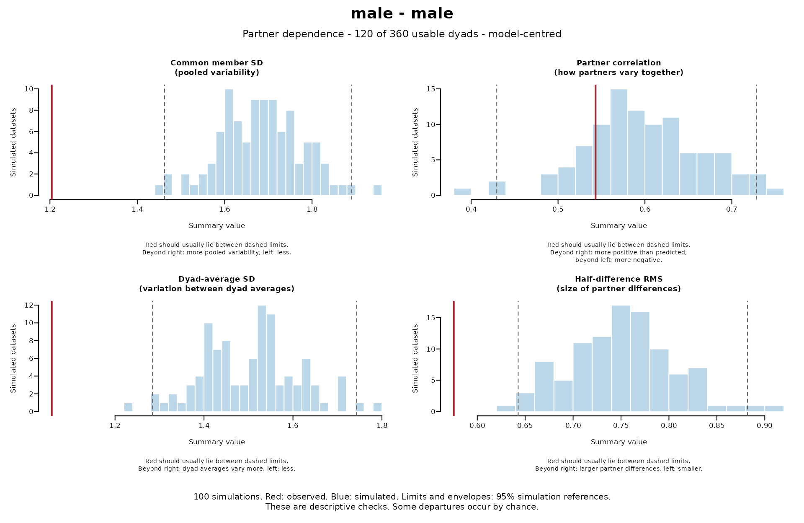
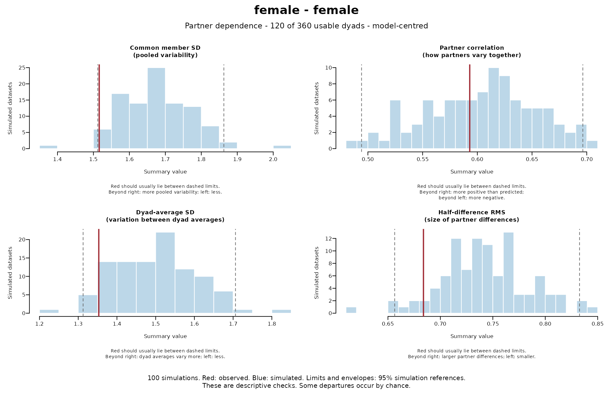
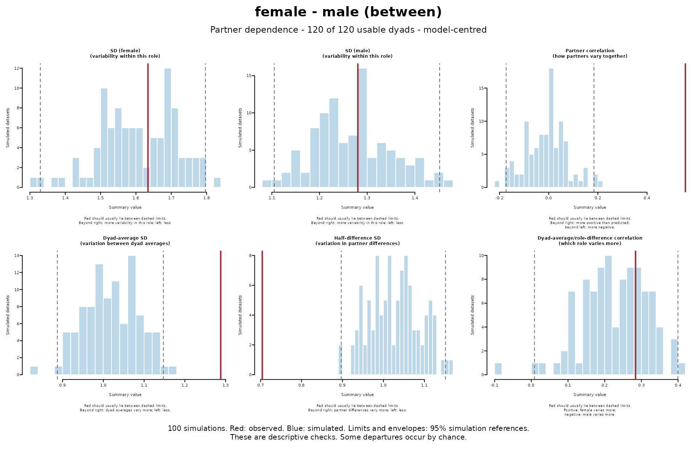
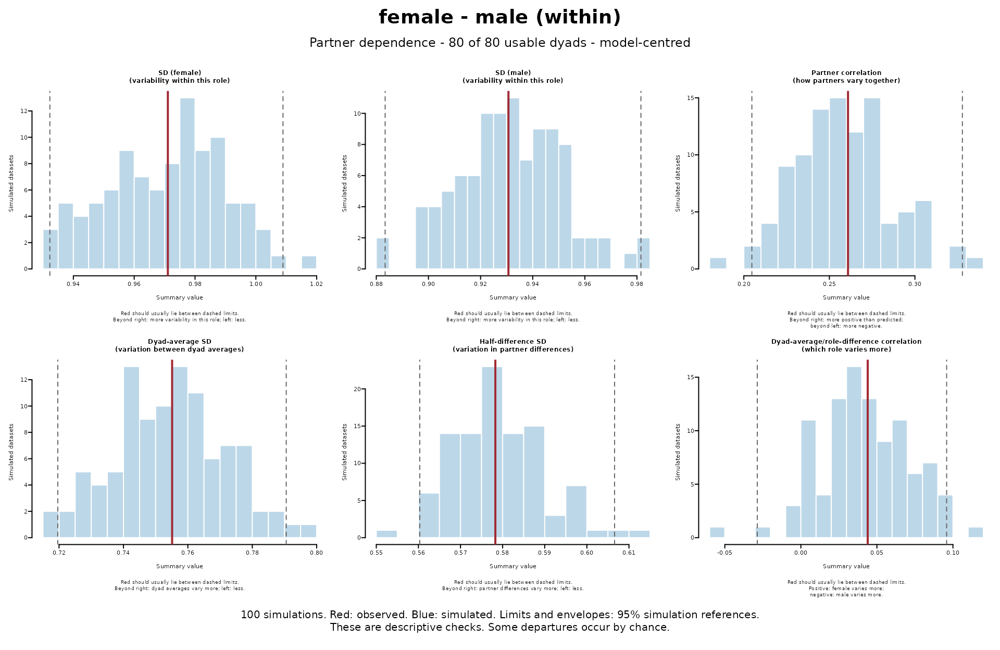

Check whether a fitted model reproduces partner dependence
Source:R/predictive_checks_dependence.R
check_partner_dependence.Rd![[Experimental]](figures/lifecycle-experimental.svg) A dyadic model should reproduce how much responses vary and how strongly
partners' responses are related. This check compares the observed response
variances and partner correlations with those of responses simulated from the
fitted model. This helps identify mismatches in the model's assumptions.
This check is especially useful when a less restricted model does not
converge and so cannot be used for model comparison. For repeated occasions,
supply
A dyadic model should reproduce how much responses vary and how strongly
partners' responses are related. This check compares the observed response
variances and partner correlations with those of responses simulated from the
fitted model. This helps identify mismatches in the model's assumptions.
This check is especially useful when a less restricted model does not
converge and so cannot be used for model comparison. For repeated occasions,
supply member and time.
Usage
check_partner_dependence(
simulations,
dyad,
role = NULL,
member = NULL,
time = NULL,
plot = TRUE,
response = c("model-centred", "raw"),
ask = NULL,
panels = TRUE,
data = NULL
)Arguments
- simulations
An object returned by
simulate_dyad_responses().- dyad
The dyad column name. Looked up first in the fitted model frame, then in
dataif supplied.- role
The role column name. Looked up first in the fitted model frame, then in
dataif supplied.NULL(default) pools all dyads as exchangeable. Supply roles even for an exchangeable model to reveal variance or partner-correlation mismatches that pooling may hide. Each dyad composition (role pair, such as female-male) is checked separately, using exchangeable summaries for same-role pairs and role-specific summaries otherwise. For repeated occasions, each member must keep the same role within their dyad. Rows with missing roles are omitted.- member
The column name identifying each member. Only needed for repeated occasions, ignored without a
timeargument. Looked up first in the fitted model frame, then indataif supplied.- time
The column name identifying each occasion. Only needed for repeated occasions. Requires
memberto be supplied.timemust identify occasions that partners exactly share, such as the diary day. Every fitted row needs a knownmemberandtime. Looked up first in the fitted model frame, then indataif supplied.- plot
If
TRUE(default), draw the comparison plots for visual checks. IfFALSE,askandpanelsare ignored.- response
"model-centred"(default) subtracts the same model predictions from observed and simulated responses. The predictive check then assesses whether the model reproduces the variance and partner correlations remaining after accounting for its fixed-effect predictions. This includes random effects and observation-level noise. With"raw", the predictive check assesses whether the full model, including fixed effects, reproduces the overall response variances and partner correlations. Seesimulate_dyad_responses()for how predictions are defined.- ask
Whether to pause between figures on an interactive device.
NULL(default) pauses when there is more than one figure,TRUEpauses andFALSEdraws without pausing. File devices never pause.- panels
If
TRUE(default), show each composition in one figure, with two rows and up to three columns. IfFALSE, draw each statistic separately. Graphics settings are restored afterwards.- data
Optional: the unchanged data frame used to fit the model. Supply it when
dyad,role,member, ortimeis not in the model formulas.
Value
The comparison plots (shown by default) are the main output. The
function invisibly returns a dyadMLM_partner_check object containing the
compositions table with pair counts and a statistics tibble for each
composition. Compositions with fewer than three complete dyads are skipped
and have NULL statistics. Each tibble has one observed row
followed by one row per simulation, identified by dataset. summary
compares each observed statistic with the middle 95% of its simulations
(lower, upper) and marks those outside it. Rows with missing dyad IDs
or roles and incomplete dyads are omitted with a warning. The object includes
omission counts and settings, and can be saved and plotted later.
With repeated occasions, compositions has a level column ("between"
or "within"), and each label ends with its level. Within-level rows count the
dyads that share at least one occasion.
Reading the plots
Blue histograms show simulated summaries. Red lines mark observed values. Dashed lines enclose the middle 95% of simulations (no formal confidence intervals). The heading shows the dyad composition, its number of usable dyads, and the total across all compositions.
The top row compares:
Response SDs: one for each role, or one common SD for exchangeable members.
Partner correlation: how strongly partners' responses are related.
The bottom row shows the same information using dyad averages and half-differences:
Dyad-average SD: how much dyads differ in their average response.
Half-difference SD or RMS: each partner difference is divided by two. With distinct roles, the SD shows how much signed differences vary across dyads. For exchangeable members, the RMS (root mean square) shows their typical size, regardless of partner order.
Dyad-average/role-difference correlation: shown only for distinct roles, because it depends on how partners are ordered. Positive values indicate greater variance for the first named role. Negative values indicate greater variance for the second.
An observed value far from most simulated values may indicate that the model does not reproduce that feature of the data well. Even if simulated and observed values agree, this does not show that omitted dependence is negligible, especially with few dyads. The partner-dependence study illustrates how sample size affects detection when residual partner correlation is omitted.
Checking each composition separately can reveal differences hidden by
pooling. With few dyads in a composition, the simulated ranges are wide, so
its panels lack sensitivity.
Flags (observed values outside the middle 95%, marked * when printed) can
occur by chance, especially when checking several summaries.
They are a starting point for further investigation, not necessarily a
reason to reject the model. The
covariance-pooling study
illustrates detection and false alarms when checking each composition.
A flexible covariance model will usually reproduce features it estimated from
the same data. Agreement alone therefore does not establish good fit.
For example, pooled summaries (role = NULL) of a Gaussian model with an
unconstrained exchangeable covariance, as below, agree almost by construction.
Use a suitable model comparison to formally test a specific covariance
restriction when both models can be fitted (see compare_nested_models()).
Repeated occasions
With repeated occasions, partners can be related in two ways: in their
mean responses, and in being above or below their own means on the same
occasions. A model should reproduce both. With member and time,
every dataset (observed and simulated) is split into two levels after any
model-centring. Each level is checked like cross-sectional data:
Between: each member's mean over all their fitted occasions, paired within the dyad. Each dyad counts once.
Within: each response minus its member's mean, paired with the partner's deviation on the same occasion. Each shared occasion counts once.
An occasion without the partner still counts in the member's mean.
The within check is related to repeated-measures correlation (Bakdash & Marusich, 2017).
The longitudinal study examines detection and false alarms. With 50 or fewer dyads, the check often missed omitted partner covariance.
Known limitations and caveats:
A misfit at one level can also impact the other level's summaries, especially with few occasions (due to member means including occasion-level variance) or nonlinear links. Thus, both levels should be interpreted together.
Check dependence across occasions (e.g., autocorrelation) separately. If the model omits temporal dependence, its covariance estimates can be biased, and these checks may not reveal it.
These checks can be misleading when the model includes lagged outcomes as predictors.
Technical details
After any centring, paired responses a and b are used to compute
dyad averages M = (a + b) / 2 and half-differences D = (a - b) / 2.
Roles follow factor levels or sorted values.
For exchangeable members, common member variance is var(M) + mean(D^2) and
partner covariance is var(M) - mean(D^2). Partner correlation is
covariance divided by variance. Half-difference RMS is sqrt(mean(D^2)).
The variance and covariance calculations for exchangeable dyads follow Woody and Sadler (2005).
References
Woody, E., & Sadler, P. (2005). Structural equation models for interchangeable dyads: Being the same makes a difference. Psychological Methods, 10(2), 139–158. doi:10.1037/1082-989X.10.2.139
Bakdash, J. Z., & Marusich, L. R. (2017). Repeated measures correlation. Frontiers in Psychology, 8, 456. doi:10.3389/fpsyg.2017.00456
Examples
# Data contains three compositions: female-female, female-male, and male-male.
example_data <- prepare_dyad_data(
dyads_cross,
dyad = coupleID,
member = personID,
model_types = "none",
seed = 123
)
# This model pools all compositions and treats every dyad as exchangeable.
model <- glmmTMB::glmmTMB(
closeness ~ 1 +
us(1 | coupleID) +
us(0 + .member_contrast_arbitrary | coupleID),
dispformula = ~ 0,
data = example_data
)
# Fewer simulations for a quick example (the default is 1000).
simulations <- simulate_dyad_responses(
model,
nsim = 100,
seed = 123
)
# Check whether pooling fits the data. Each composition is checked
# separately, with role-specific summaries for distinguishable compositions.
check_partner_dependence(
simulations,
dyad = coupleID,
role = gender,
# Supply the fitting data because gender is not in the model formula.
data = example_data
)



# Optionally, suppress plot, store object, and plot later.
check <- check_partner_dependence(
simulations,
dyad = coupleID,
role = gender,
data = example_data,
plot = FALSE
)
plot(check, ask = FALSE, panels = TRUE)


 print(check)
#> <dyadMLM partner-dependence check>
#> Response: model-centred
#> Reference: 100 plug-in predictive datasets with new random effects
#>
#> female - female: 120 of 360 usable dyads
#> Observed Lower Upper Statistic
#> 1.516 1.512 1.863 Common member SD (exchangeable)
#> 0.593 0.494 0.696 Partner correlation (exchangeable)
#> 1.353 1.313 1.706 Dyad-average SD
#> 0.684 0.656 0.833 Half-difference RMS (about zero)
#>
#> female - male: 120 of 360 usable dyads
#> Observed Lower Upper Statistic
#> 1.634 1.425 1.892 SD (female)
#> 1.280 1.415 1.919 * SD (male)
#> 0.556 0.489 0.699 Partner correlation (female and male)
#> 1.288 1.290 1.694 * Dyad-average SD
#> 0.704 0.644 0.830 Half-difference SD (female minus male)
#> 0.284 -0.190 0.196 * Dyad-average/role-difference correlation (female minus male)
#>
#> male - male: 120 of 360 usable dyads
#> Observed Lower Upper Statistic
#> 1.204 1.462 1.891 * Common member SD (exchangeable)
#> 0.543 0.429 0.728 Partner correlation (exchangeable)
#> 1.058 1.284 1.743 * Dyad-average SD
#> 0.576 0.643 0.882 * Half-difference RMS (about zero)
#>
#> Outside the middle 95% of simulations (*): 6 of 14 observed statistics.
#> Some departures occur by chance; these are descriptive checks, not significance tests.
#> Use plot(x) to view the comparisons.
# For repeated occasions, also supply `member` and `time`.
example_diary_data <- prepare_dyad_data(
dyads_ild[dyads_ild$coupleID <= 120, ], # Couples 1 to 120 are female-male.
dyad = coupleID,
member = personID,
role = gender,
time = diaryday,
model_types = "none",
seed = 123
)
diary_model <- glmmTMB::glmmTMB(
closeness ~ 0 + gender + gender:diaryday +
# In this example, we omit the correlation between partners' random
# intercepts on level 2 with a diagonal covariance structure. This is
# sometimes done when a model does not otherwise converge cleanly.
diag(0 + gender | coupleID) +
# Keep the full structure for the level 1 residuals.
us(0 + gender | coupleID:diaryday),
dispformula = ~ 0,
data = example_diary_data
)
# The between level flags the omitted partner correlation.
check_partner_dependence(
simulate_dyad_responses(diary_model, nsim = 100, seed = 123),
dyad = coupleID,
role = gender,
member = personID,
time = diaryday,
# Supply the fitting data because personID is not in the model formula.
data = example_diary_data
)
print(check)
#> <dyadMLM partner-dependence check>
#> Response: model-centred
#> Reference: 100 plug-in predictive datasets with new random effects
#>
#> female - female: 120 of 360 usable dyads
#> Observed Lower Upper Statistic
#> 1.516 1.512 1.863 Common member SD (exchangeable)
#> 0.593 0.494 0.696 Partner correlation (exchangeable)
#> 1.353 1.313 1.706 Dyad-average SD
#> 0.684 0.656 0.833 Half-difference RMS (about zero)
#>
#> female - male: 120 of 360 usable dyads
#> Observed Lower Upper Statistic
#> 1.634 1.425 1.892 SD (female)
#> 1.280 1.415 1.919 * SD (male)
#> 0.556 0.489 0.699 Partner correlation (female and male)
#> 1.288 1.290 1.694 * Dyad-average SD
#> 0.704 0.644 0.830 Half-difference SD (female minus male)
#> 0.284 -0.190 0.196 * Dyad-average/role-difference correlation (female minus male)
#>
#> male - male: 120 of 360 usable dyads
#> Observed Lower Upper Statistic
#> 1.204 1.462 1.891 * Common member SD (exchangeable)
#> 0.543 0.429 0.728 Partner correlation (exchangeable)
#> 1.058 1.284 1.743 * Dyad-average SD
#> 0.576 0.643 0.882 * Half-difference RMS (about zero)
#>
#> Outside the middle 95% of simulations (*): 6 of 14 observed statistics.
#> Some departures occur by chance; these are descriptive checks, not significance tests.
#> Use plot(x) to view the comparisons.
# For repeated occasions, also supply `member` and `time`.
example_diary_data <- prepare_dyad_data(
dyads_ild[dyads_ild$coupleID <= 120, ], # Couples 1 to 120 are female-male.
dyad = coupleID,
member = personID,
role = gender,
time = diaryday,
model_types = "none",
seed = 123
)
diary_model <- glmmTMB::glmmTMB(
closeness ~ 0 + gender + gender:diaryday +
# In this example, we omit the correlation between partners' random
# intercepts on level 2 with a diagonal covariance structure. This is
# sometimes done when a model does not otherwise converge cleanly.
diag(0 + gender | coupleID) +
# Keep the full structure for the level 1 residuals.
us(0 + gender | coupleID:diaryday),
dispformula = ~ 0,
data = example_diary_data
)
# The between level flags the omitted partner correlation.
check_partner_dependence(
simulate_dyad_responses(diary_model, nsim = 100, seed = 123),
dyad = coupleID,
role = gender,
member = personID,
time = diaryday,
# Supply the fitting data because personID is not in the model formula.
data = example_diary_data
)

